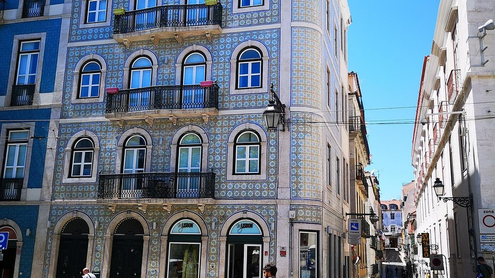

Cheapest City Breaks in Europe for 2026
Cheapest City Breaks in Europe for 2026
A cheap city break is not a city with a discount sticker. It's the sum of five costs — flight, two nights, food, local transport and one or two paid attractions — and the cities that win are usually the ones where all five stay low at the same time. The good news: you don't need a secret destination. You need a sensible shortlist, the right dates and a booking order that doesn't reverse the savings.
Below is how to choose a city, five solid picks for 2026, and the specific moves that cut the total without turning the weekend into a survival exercise.
What "cheap" actually means for a city break
Break the trip down before you compare anything:
- Flight: the biggest variable. Midweek departures and secondary airports usually beat Friday evening.
- Stay: two nights near transit beats three nights "in the centre" almost every time.
- Food: one sit-down meal a day plus local bakeries and markets is a different budget from restaurant hopping.
- Transport: walkable cities save more than any transport pass.
- Attractions: one paid highlight is usually enough for a weekend.
Compare the whole number, not the fare. A €40 flight with a €30 airport transfer and a hotel far from the centre is not a cheap weekend.
How to pick the city
Four filters do most of the work:
- Flight access. Direct routes and low-cost carriers matter more than the city's reputation. Search a month, not a single date — see how flexible dates work.
- Walkability. A compact old town plus cheap trams is worth more than a long list of sights.
- Shoulder season. April–May and September–October usually combine decent weather with lower demand.
- Currency and prices. Non-euro countries can be cheaper on the ground, but check card fees and cash habits.
Five affordable picks for 2026
Porto, Portugal. Compact, walkable and food-focused, with day trips along the Douro. Spring and early autumn are the sweet spot; August is crowded and hot. Book the river side early if you want the view.
Kraków, Poland. A walkable old town, serious history and good rail links from Central Europe. Late spring and September are pleasant; winter is atmospheric and cheaper. Auschwitz-Birkenau should be booked in advance and treated with respect, not as a photo stop.
Budapest, Hungary. Thermal baths, ruin bars and an easy tram network. It's one of the best-value capitals in Europe if you avoid the obvious tourist strip. Spring and autumn are ideal; summer is hot but evenings are long.
Valencia, Spain. City plus beach in one trip, with fewer crowds than Barcelona. The old town and the City of Arts and Sciences are a tram ride apart. March–May and October are the best months.
Tallinn, Estonia. A compact medieval old town, cheap off-season and easy ferry links to Helsinki. Summer is the peak; late autumn and early spring are quiet and much lighter on the wallet.
None of these are "secret" — and that's the point. The savings come from timing and booking habits, not from a hidden gem.
How to cut the total
- Fly Tuesday–Thursday. The difference against a Friday evening is often bigger than any promo code.
- Stay one stop from the old town. Two stops on the metro can cut the hotel bill without changing the trip.
- Do the pass math. A city pass (e.g. Go City) pays off at two or three major sights per day; at one museum a day it's a loss. Compare against individual tickets on the city's official sites.
- Book one highlight, not five. A single well-chosen tour or skip-the-line ticket usually beats a packed itinerary.
- Use free walking tours and markets. They're the cheapest way to understand a city, and tips are optional.
- Eat lunch out, dinner in. Lunch menus are often the same food for less; a supermarket picnic on a viewpoint is a legitimate plan.
Booking order that works
- Check flight prices for the whole month and pick two candidate date pairs.
- Compare two or three hotels near transit for those dates.
- Decide whether a city pass makes sense for your actual plan.
- Book flights and refundable hotel rates first; lock the rest a week before.
- Re-check the flight price the day before — if it dropped, your refundable hotel rate is still flexible.
One more check before paying: if you're travelling with hand luggage only, confirm the fare actually includes a proper cabin bag and not just a personal item. The cheapest-looking seat can be the one without room for your stuff.
Mistakes that quietly raise the cost
A few habits turn a cheap weekend into an expensive one:
- Booking the Friday evening return. It's the most expensive slot of the week — check Saturday or Monday.
- Staying "in the centre" at any price. A hotel two metro stops away often costs less than the difference in taxi fares.
- Paying for a checked bag at the airport. Add it online when you book, or pack carry-on only.
- Buying a city pass without a plan. Passes are a discount on things you'd buy anyway, not a reason to buy them.
- Changing money at the airport. Use an ATM or a card with no foreign transaction fee.
None of these are dramatic on their own. Together they can easily outweigh the flight saving you spent an evening chasing — so fix the boring parts first, then optimize the fare.
FAQ
Are city breaks cheaper in winter?
Often yes — except for Christmas markets and New Year, when prices spike. January–March (outside school holidays) is usually the cheapest window, but daylight is short and some attractions run reduced hours.
Is it cheaper to book flight and hotel together?
Sometimes, especially on package-friendly routes. Compare a package against separate bookings for the same hotel and dates; packages win more often on transfers and luggage, separate bookings on flexibility.
How many nights do I need?
Two nights is the minimum for a city break; three is better if the flight is longer than three hours. Anything less turns into an airport day with a walk in the middle.
Do city passes actually save money?
Only if you'd visit the included sights anyway. List your must-sees first, price them individually, then compare with the pass price. If you're unsure, skip it.
Plan your break
Compare flights for your dates on Kiwi.com">Kiwi.com, check whether a city pass fits your plan on Go City">Go City, and book the one highlight you actually want on Klook">Klook.
Disclosure
This article contains affiliate links. If you book through them, we may earn a commission at no extra cost to you.
Ad · affiliate link. We may earn a commission at no extra cost to you.